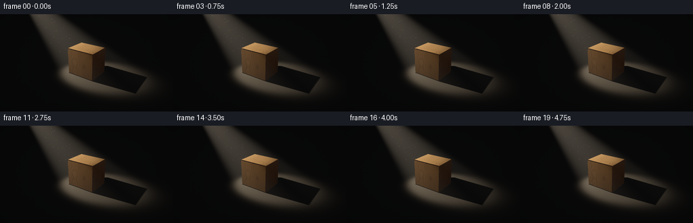
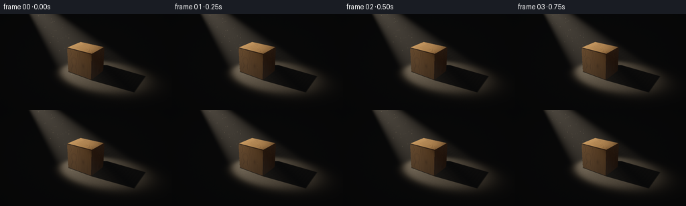

CODING AGENTS AS PIXEL WORLD MODELS
traex/GPT-6.1-Sol · phygen_041
点击播放 · 原生 RGB 像素
逐轮保存的候选
回放视频、检查图与代码变化。
每份候选均可单独播放。实际图片检查记录在下方工具轨迹中。
候选 01播放与检查图
点击播放 · 原生 RGB 像素


展开代码变化
--- 上一保存版本
+++ 本次保存版本
@@ -0,0 +1,224 @@
+"""Deterministic, purely mathematical rendering of a diagonal light and wood block."""
+from pathlib import Path
+import json
+import math
+import numpy as np
+from PIL import Image
+import artifact_io
+
+ROOT = Path(__file__).resolve().parent
+SPEC = json.loads((ROOT / 'task_spec.json').read_text())
+W, H = SPEC['width'], SPEC['height']
+S = 3
+WW, HH = W*S, H*S
+rng = np.random.default_rng(41)
+cam = np.array([5.8, -8.2, 5.5])
+target = np.array([0., 0., .77])
+forward = target-cam; forward /= np.linalg.norm(forward)
+right = np.cross(forward, [0.,0.,1.]); right /= np.linalg.norm(right)
+up = np.cross(right, forward)
+yy, xx = np.mgrid[0:HH,0:WW]
+focal = 232*S
+dirs = forward + ((xx+.5-WW/2)/focal)[...,None]*right - ((yy+.5-HH/2)/focal)[...,None]*up
+dirs /= np.linalg.norm(dirs,axis=-1)[...,None]
+source = np.array([-5.0,-1.5,6.0])
+axis = np.array([0.,0.,.55])-source; axis /= np.linalg.norm(axis)
+center = np.array([0.,0.,.945])
+half = np.array([1.04,.79,.945])
+bevel = .045
+
+# The cuboid's twelve edges and eight corners are physically chamfered.
+planes = []
+for j in range(3):
+ for sign in [-1,1]:
+ n=np.zeros(3); n[j]=sign
+ planes.append((n,half[j]))
+for a,b in [(0,1),(0,2),(1,2)]:
+ for sa in [-1,1]:
+ for sb in [-1,1]:
+ n=np.zeros(3);n[a]=sa;n[b]=sb
+ planes.append((n/np.sqrt(2),(half[a]+half[b]-bevel)/np.sqrt(2)))
+for sx in [-1,1]:
+ for sy in [-1,1]:
+ for sz in [-1,1]:
+ planes.append((np.array([sx,sy,sz])/np.sqrt(3),(sum(half)-2*bevel)/np.sqrt(3)))
+
+def intersect_box(origin, direction):
+ shape=direction.shape[:-1]
+ lo=np.full(shape,-1e20); hi=np.full(shape,1e20)
+ normals=np.zeros(direction.shape)
+ rel=origin-center
+ for normal,bound in planes:
+ den=np.sum(direction*normal,axis=-1)
+ num=bound-np.sum(rel*normal,axis=-1)
+ tt=num/np.where(abs(den)>1e-10,den,1e-10)
+ entering=den<0
+ change=entering & (tt>lo)
+ normals[change]=normal
+ lo=np.where(entering,np.maximum(lo,tt),lo)
+ hi=np.where(~entering,np.minimum(hi,tt),hi)
+ valid=(lo<=hi)&(hi>0)&(lo>0)
+ return np.where(valid,lo,np.inf),normals
+
+def visibility(points, light):
+ # Slab intersection for transport rays; bevel is negligible for distant shadow.
+ vector=light-points
+ start=points-center
+ inv=1/np.where(abs(vector)>1e-8,vector,1e-8)
+ ta=(-half-start)*inv;tb=(half-start)*inv
+ enter=np.max(np.minimum(ta,tb),axis=-1)
+ leave=np.min(np.maximum(ta,tb),axis=-1)
+ return ~((leave>np.maximum(enter,.0008)) & (enter<.9999))
+
+def hash3(x,y,z):
+ a=np.sin(x*127.1+y*311.7+z*74.7)*43758.5453
+ return a-np.floor(a)
+
+def noise(p):
+ p=np.asarray(p); ip=np.floor(p); f=p-ip; f=f*f*(3-2*f)
+ value=np.zeros(p.shape[:-1])
+ for a in [0,1]:
+ for b in [0,1]:
+ for c in [0,1]:
+ weight=(f[...,0] if a else 1-f[...,0])*(f[...,1] if b else 1-f[...,1])*(f[...,2] if c else 1-f[...,2])
+ value+=weight*hash3(ip[...,0]+a,ip[...,1]+b,ip[...,2]+c)
+ return value
+
+box_t,normals=intersect_box(cam,dirs)
+floor_t=np.where(dirs[...,2]<-1e-5,-cam[2]/dirs[...,2],1e3)
+iswood=box_t<floor_t
+hit_t=np.minimum(box_t,floor_t)
+hit_t=np.minimum(hit_t,50.)
+pts=cam+dirs*hit_t[...,None]
+normals[~iswood]=[0,0,1]
+
+# Solid, continuous growth rings, fine pores and gently wandering longitudinal fibers.
+x,y,z=pts[...,0],pts[...,1],pts[...,2]
+warp=.021*np.sin(z*2.7)+.013*np.sin(z*7.4)
+rad=np.sqrt(((x+.39+warp)*.87)**2+((y-.17+warp*.7)*1.07)**2)
+slow=noise(np.stack([x*2.2,y*2.2,z*.27],-1))
+phase=rad*28+slow*1.45+.11*np.sin(z*3.2)
+ring=phase-np.floor(phase)
+late=np.exp(-((ring-.78)/.10)**2)
+fine=np.sin(rad*255+slow*11+z*.45)
+fiber=noise(np.stack([x*115,y*115,z*2.0],-1))
+large=noise(np.stack([x*2.7,y*2.7,z*.5],-1))
+wood_value=.91-.23*late+.045*fine+.13*(large-.5)+.085*(fiber-.5)
+# Small natural elliptical knot in the broad front face, with bent surrounding grain.
+kx=(x-.35)/.13;kz=(z-.86)/.21
+kr=np.sqrt(kx*kx+kz*kz)
+knot=np.exp(-kr*kr*1.5)*(abs(normals[...,1])>.9)
+wood_value-=.26*knot
+wood_base=np.array([.57,.315,.125])
+albedo=wood_value[...,None]*wood_base
+# End grain is a slightly lighter, freshly cut honey-colored surface.
+top=normals[...,2]>.8
+albedo[top]*=np.array([1.12,1.15,1.2])
+# Fine matte mineral grain on the dark supporting surface.
+ground_noise=noise(np.stack([x*39,y*39,z],-1))
+ground=np.array([.155,.143,.125])*(.9+.16*ground_noise[...,None])
+albedo[~iswood]=ground[~iswood]
+
+# Warm spotlight, actual finite emitter, cast contact shadows, subtle reflected fill.
+ambient=np.full_like(albedo,.0075)
+ambient[iswood]=np.array([.031,.021,.014])
+ambient[iswood]*=(.52+.48*np.clip(z[iswood]/1.9,0,1))[:,None]
+light_col=np.array([1.0,.85,.65])
+shade=np.zeros_like(albedo)
+light_samples=[np.array([0.,0.,0.])]
+for i in range(8):
+ angle=i*2*np.pi/8
+ light_samples.append(np.array([.06*np.cos(angle),.06*np.sin(angle),.025*np.sin(angle*2)]))
+for offset in light_samples:
+ light=source+offset
+ v=light-pts;dist=np.linalg.norm(v,axis=-1);ld=v/dist[...,None]
+ fromlamp=-ld
+ cosang=np.sum(fromlamp*axis,axis=-1)
+ angle=np.arccos(np.clip(cosang,-1,1))
+ # A defined but feathered shaft, not an arbitrary triangular overlay.
+ cone=1/(1+np.exp(np.clip((angle-.235)/.018,-60,60)))
+ lambert=np.maximum(0,np.sum(normals*ld,axis=-1))
+ vis=visibility(pts+normals*.002,light)
+ irradiance=65/(dist*dist)*cone*lambert*vis
+ shade+=irradiance[...,None]*light_col/len(light_samples)
+linear=albedo*(ambient+shade)
+# A broad subdued reflection on cut fibers, preserving a dry wood appearance.
+v=source-pts;ld=v/np.linalg.norm(v,axis=-1)[...,None]
+hvec=ld-dirs;hvec/=np.linalg.norm(hvec,axis=-1)[...,None]
+specular=np.maximum(0,np.sum(normals*hvec,axis=-1))**24
+linear+=shade*.015*specular[...,None]
+
+# Integrate the illuminated, lightly dusty atmosphere up to each visible surface.
+volume=np.zeros((HH,WW))
+steps=52
+stop=np.minimum(hit_t,18.)
+for i in range(steps):
+ t=stop*(i+.5)/steps
+ p=cam+dirs*t[...,None]
+ q=p-source
+ axial=np.sum(q*axis,axis=-1)
+ radial2=np.maximum(0,np.sum(q*q,axis=-1)-axial*axial)
+ radius=np.maximum(.05,axial*np.tan(.235))
+ edge=np.sqrt(radial2)/radius
+ dens=np.exp(-edge**8*.8)*(axial>0)*(axial<12)
+ # The block also occludes the light in the haze behind it.
+ visible=visibility(p,source)
+ irr=65/(np.sum(q*q,axis=-1)+.4)
+ volume+=dens*visible*irr*(stop/steps)*.009
+linear+=volume[...,None]*np.array([1.,.84,.64])
+# Slight exposure rolloff and the tiniest dark-room background fill.
+linear+=np.array([.0013,.00145,.0017])
+base=linear.copy()
+
+# Sparse suspended motes, drifting very slowly through the cone. They neither
+# move the block nor break the stable geometrical relation of light and shadow.
+dust=[]
+for i in range(65):
+ axial=rng.uniform(1.8,7.6)
+ p=source+axis*axial
+ u=np.cross(axis,[0,0,1.]);u/=np.linalg.norm(u)
+ v=np.cross(axis,u)
+ rr=axial*np.tan(.235)*rng.uniform(.08,.88)
+ a=rng.uniform(0,2*np.pi)
+ p=p+rr*(np.cos(a)*u+np.sin(a)*v)
+ dust.append((p,rng.uniform(.025,.065),rng.uniform(.17,.7),rng.uniform(0,6.28)))
+
+def project(p):
+ delta=p-cam;depth=delta@forward
+ return np.array([WW/2+focal*(delta@right)/depth, HH/2-focal*(delta@up)/depth]),depth
+
+frames=[]
+for frame in range(SPEC['frames']):
+ time=frame/SPEC['fps']
+ image=base.copy()
+ # Almost imperceptible airborne light variation, not flashing illumination.
+ image+=volume[...,None]*np.array([1,.84,.64])*.012*np.sin(time*1.1)
+ for p,velocity,bright,phase in dust:
+ p=p+np.array([.013*np.sin(time*.6+phase),.012*np.cos(time*.5+phase),time*velocity])
+ loc,depth=project(p)
+ cx,cy=loc
+ ix,iy=int(cx),int(cy)
+ if ix<0 or ix>=WW or iy<0 or iy>=HH: continue
+ if depth>hit_t[iy,ix]: continue
+ if not visibility(p[None,:],source)[0]:continue
+ radius=S*(.22+.07*np.sin(phase))
+ x0=max(0,int(cx-3*radius)); x1=min(WW,int(cx+3*radius)+1)
+ y0=max(0,int(cy-3*radius)); y1=min(HH,int(cy+3*radius)+1)
+ py,px=np.mgrid[y0:y1,x0:x1]
+ spot=np.exp(-((px-cx)**2+(py-cy)**2)/(2*radius**2))
+ twinkle=.8+.2*np.sin(time*.8+phase)
+ image[y0:y1,x0:x1]+=spot[...,None]*bright*twinkle*np.array([.26,.20,.125])
+ # Filmic highlight rolloff with standard RGB output, supersampled edges.
+ image=image/(1+image*.42)
+ rgb=np.where(image<=.0031308,image*12.92,1.055*np.maximum(image,0)**(1/2.4)-.055)
+ # Gentle lens vignette keeps the unlit room almost black.
+ vignette=1-.14*((xx-WW/2)/(WW/2))**2-.10*((yy-HH/2)/(HH/2))**2
+ rgb*=vignette[...,None]
+ rgb=np.uint8(np.clip(rgb*255+.5,0,255))
+ rgb=np.asarray(Image.fromarray(rgb).resize((W,H),Image.Resampling.LANCZOS))
+ frames.append(rgb)
+frames=np.stack(frames)
+artifact_io.save(frames,ROOT)
+print('Saved',frames.shape,frames.dtype)
+print('RGB min/max/mean:',frames.min(),frames.max(),frames.mean(axis=(0,1,2)))
+print('Temporal mean absolute change:',np.abs(np.diff(frames.astype(float),axis=0)).mean())
可观测工具轨迹
实际执行的命令与返回图片。
命令 1exit 0
/bin/bash -lc "ls -la && cat prompt.txt && printf '\\n--- RULES ---\\n' && cat GENERATION_RULES.md && printf '\\n--- SPEC ---\\n' && cat task_spec.json"
命令 2exit 0
/bin/bash -lc "cat artifact_io.py && printf '\\n--- packages ---\\n' && python - <<'PY'
import numpy, PIL
print('numpy',numpy.__version__, 'PIL',PIL.__version__)
PY"命令 3exit 0
/bin/bash -lc "python - <<'PY'
import numpy as np
cam=np.array([5.,-9.,5.2]);target=np.array([0.,0.,0.8]); f=target-cam;f/=np.linalg.norm(f);r=np.cross(f,[0,0,1]);r/=np.linalg.norm(r);u=np.cross(r,f)
print('basis',f,r,u)
for p in [[0,0,0],[0,0,1.7],[-4,-4,7],[1.2,1.3,0],[2.5,2.5,0],[-.9,-.8,0],[.9,-.8,0],[.9,.8,0]]:
d=np.array(p)-cam;z=d@f
print(p,'screen',np.array([128,72])+np.array([d@r,-d@u])*210/z)
PY"命令 4exit 0
/bin/bash -lc "python - <<'PY' import numpy as np cam=np.array([4.,-8.5,5.4]);target=np.array([0.,0.,.75]); f=target-cam;f/=np.linalg.norm(f);r=np.cross(f,[0,0,1]);r/=np.linalg.norm(r);u=np.cross(r,f) for p in [[0,0,0],[0,0,2],[-7,-.8,6],[2.5,.3,0],[0,0,1],[-4.3,-.49,3.7]]: d=np.array(p)-cam;print(p,np.array([128,72])+np.array([d@r,-d@u])*225/(d@f)) PY"
命令 5exit 0
/bin/bash -lc "cat > generate.py <<'PY'
\"\"\"Deterministic, purely mathematical rendering of a diagonal light and wood block.\"\"\"
from pathlib import Path
import json
import math
import numpy as np
from PIL import Image
import artifact_io
ROOT = Path(__file__).resolve().parent
SPEC = json.loads((ROOT / 'task_spec.json').read_text())
W, H = SPEC['width'], SPEC['height']
S = 3
WW, HH = W*S, H*S
rng = np.random.default_rng(41)
cam = np.array([5.8, -8.2, 5.5])
target = np.array([0., 0., .77])
forward = target-cam; forward /= np.linalg.norm(forward)
right = np.cross(forward, [0.,0.,1.]); right /= np.linalg.norm(right)
up = np.cross(right, forward)
yy, xx = np.mgrid[0:HH,0:WW]
focal = 232*S
dirs = forward + ((xx+.5-WW/2)/focal)[...,None]*right - ((yy+.5-HH/2)/focal)[...,None]*up
dirs /= np.linalg.norm(dirs,axis=-1)[...,None]
source = np.array([-5.0,-1.5,6.0])
axis = np.array([0.,0.,.55])-source; axis /= np.linalg.norm(axis)
center = np.array([0.,0.,.945])
half = np.array([1.04,.79,.945])
bevel = .045
# The cuboid's twelve edges and eight corners are physically chamfered.
planes = []
for j in range(3):
for sign in [-1,1]:
n=np.zeros(3); n[j]=sign
planes.append((n,half[j]))
for a,b in [(0,1),(0,2),(1,2)]:
for sa in [-1,1]:
for sb in [-1,1]:
n=np.zeros(3);n[a]=sa;n[b]=sb
planes.append((n/np.sqrt(2),(half[a]+half[b]-bevel)/np.sqrt(2)))
for sx in [-1,1]:
for sy in [-1,1]:
for sz in [-1,1]:
planes.append((np.array([sx,sy,sz])/np.sqrt(3),(sum(half)-2*bevel)/np.sqrt(3)))
def intersect_box(origin, direction):
shape=direction.shape[:-1]
lo=np.full(shape,-1e20); hi=np.full(shape,1e20)
normals=np.zeros(direction.shape)
rel=origin-center
for normal,bound in planes:
den=np.sum(direction*normal,axis=-1)
num=bound-np.sum(rel*normal,axis=-1)
tt=num/np.where(abs(den)>1e-10,den,1e-10)
entering=den<0
change=entering & (tt>lo)
normals[change]=normal
lo=np.where(entering,np.maximum(lo,tt),lo)
hi=np.where(~entering,np.minimum(hi,tt),hi)
valid=(lo<=hi)&(hi>0)&(lo>0)
return np.where(valid,lo,np.inf),normals
def visibility(points, light):
# Slab intersection for transport rays; bevel is negligible for distant shadow.
vector=light-points
start=points-center
inv=1/np.where(abs(vector)>1e-8,vector,1e-8)
ta=(-half-start)*inv;tb=(half-start)*inv
enter=np.max(np.minimum(ta,tb),axis=-1)
leave=np.min(np.maximum(ta,tb),axis=-1)
return ~((leave>np.maximum(enter,.0008)) & (enter<.9999))
def hash3(x,y,z):
a=np.sin(x*127.1+y*311.7+z*74.7)*43758.5453
return a-np.floor(a)
def noise(p):
p=np.asarray(p); ip=np.floor(p); f=p-ip; f=f*f*(3-2*f)
value=np.zeros(p.shape[:-1])
for a in [0,1]:
for b in [0,1]:
for c in [0,1]:
weight=(f[...,0] if a else 1-f[...,0])*(f[...,1] if b else 1-f[...,1])*(f[...,2] if c else 1-f[...,2])
value+=weight*hash3(ip[...,0]+a,ip[...,1]+b,ip[...,2]+c)
return value
box_t,normals=intersect_box(cam,dirs)
floor_t=np.where(dirs[...,2]<-1e-5,-cam[2]/dirs[...,2],1e3)
iswood=box_t<floor_t
hit_t=np.minimum(box_t,floor_t)
hit_t=np.minimum(hit_t,50.)
pts=cam+dirs*hit_t[...,None]
normals[~iswood]=[0,0,1]
# Solid, continuous growth rings, fine pores and gently wandering longitudinal fibers.
x,y,z=pts[...,0],pts[...,1],pts[...,2]
warp=.021*np.sin(z*2.7)+.013*np.sin(z*7.4)
rad=np.sqrt(((x+.39+warp)*.87)**2+((y-.17+warp*.7)*1.07)**2)
slow=noise(np.stack([x*2.2,y*2.2,z*.27],-1))
phase=rad*28+slow*1.45+.11*np.sin(z*3.2)
ring=phase-np.floor(phase)
late=np.exp(-((ring-.78)/.10)**2)
fine=np.sin(rad*255+slow*11+z*.45)
fiber=noise(np.stack([x*115,y*115,z*2.0],-1))
large=noise(np.stack([x*2.7,y*2.7,z*.5],-1))
wood_value=.91-.23*late+.045*fine+.13*(large-.5)+.085*(fiber-.5)
# Small natural elliptical knot in the broad front face, with bent surrounding grain.
kx=(x-.35)/.13;kz=(z-.86)/.21
kr=np.sqrt(kx*kx+kz*kz)
knot=np.exp(-kr*kr*1.5)*(abs(normals[...,1])>.9)
wood_value-=.26*knot
wood_base=np.array([.57,.315,.125])
albedo=wood_value[...,None]*wood_base
# End grain is a slightly lighter, freshly cut honey-colored surface.
top=normals[...,2]>.8
albedo[top]*=np.array([1.12,1.15,1.2])
# Fine matte mineral grain on the dark supporting surface.
ground_noise=noise(np.stack([x*39,y*39,z],-1))
ground=np.array([.155,.143,.125])*(.9+.16*ground_noise[...,None])
albedo[~iswood]=ground[~iswood]
# Warm spotlight, actual finite emitter, cast contact shadows, subtle reflected fill.
ambient=np.full_like(albedo,.0075)
ambient[iswood]=np.array([.031,.021,.014])
ambient[iswood]*=(.52+.48*np.clip(z[iswood]/1.9,0,1))[:,None]
light_col=np.array([1.0,.85,.65])
shade=np.zeros_like(albedo)
light_samples=[np.array([0.,0.,0.])]
for i in range(8):
angle=i*2*np.pi/8
light_samples.append(np.array([.06*np.cos(angle),.06*np.sin(angle),.025*np.sin(angle*2)]))
for offset in light_samples:
light=source+offset
v=light-pts;dist=np.linalg.norm(v,axis=-1);ld=v/dist[...,None]
fromlamp=-ld
cosang=np.sum(fromlamp*axis,axis=-1)
angle=np.arccos(np.clip(cosang,-1,1))
# A defined but feathered shaft, not an arbitrary triangular overlay.
cone=1/(1+np.exp(np.clip((angle-.235)/.018,-60,60)))
lambert=np.maximum(0,np.sum(normals*ld,axis=-1))
vis=visibility(pts+normals*.002,light)
irradiance=65/(dist*dist)*cone*lambert*vis
shade+=irradiance[...,None]*light_col/len(light_samples)
linear=albedo*(ambient+shade)
# A broad subdued reflection on cut fibers, preserving a dry wood appearance.
v=source-pts;ld=v/np.linalg.norm(v,axis=-1)[...,None]
hvec=ld-dirs;hvec/=np.linalg.norm(hvec,axis=-1)[...,None]
specular=np.maximum(0,np.sum(normals*hvec,axis=-1))**24
linear+=shade*.015*specular[...,None]
# Integrate the illuminated, lightly dusty atmosphere up to each visible surface.
volume=np.zeros((HH,WW))
steps=52
stop=np.minimum(hit_t,18.)
for i in range(steps):
t=stop*(i+.5)/steps
p=cam+dirs*t[...,None]
q=p-source
axial=np.sum(q*axis,axis=-1)
radial2=np.maximum(0,np.sum(q*q,axis=-1)-axial*axial)
radius=np.maximum(.05,axial*np.tan(.235))
edge=np.sqrt(radial2)/radius
dens=np.exp(-edge**8*.8)*(axial>0)*(axial<12)
# The block also occludes the light in the haze behind it.
visible=visibility(p,source)
irr=65/(np.sum(q*q,axis=-1)+.4)
volume+=dens*visible*irr*(stop/steps)*.009
linear+=volume[...,None]*np.array([1.,.84,.64])
# Slight exposure rolloff and the tiniest dark-room background fill.
linear+=np.array([.0013,.00145,.0017])
base=linear.copy()
# Sparse suspended motes, drifting very slowly through the cone. They neither
# move the block nor break the stable geometrical relation of light and shadow.
dust=[]
for i in range(65):
axial=rng.uniform(1.8,7.6)
p=source+axis*axial
u=np.cross(axis,[0,0,1.]);u/=np.linalg.norm(u)
v=np.cross(axis,u)
rr=axial*np.tan(.235)*rng.uniform(.08,.88)
a=rng.uniform(0,2*np.pi)
p=p+rr*(np.cos(a)*u+np.sin(a)*v)
dust.append((p,rng.uniform(.025,.065),rng.uniform(.17,.7),rng.uniform(0,6.28)))
def project(p):
delta=p-cam;depth=delta@forward
return np.array([WW/2+focal*(delta@right)/depth, HH/2-focal*(delta@up)/depth]),depth
frames=[]
for frame in range(SPEC['frames']):
time=frame/SPEC['fps']
image=base.copy()
# Almost imperceptible airborne light variation, not flashing illumination.
image+=volume[...,None]*np.array([1,.84,.64])*.012*np.sin(time*1.1)
for p,velocity,bright,phase in dust:
p=p+np.array([.013*np.sin(time*.6+phase),.012*np.cos(time*.5+phase),time*velocity])
loc,depth=project(p)
cx,cy=loc
ix,iy=int(cx),int(cy)
if ix<0 or ix>=WW or iy<0 or iy>=HH: continue
if depth>hit_t[iy,ix]: continue
if not visibility(p[None,:],source)[0]:continue
radius=S*(.22+.07*np.sin(phase))
x0=max(0,int(cx-3*radius)); x1=min(WW,int(cx+3*radius)+1)
y0=max(0,int(cy-3*radius)); y1=min(HH,int(cy+3*radius)+1)
py,px=np.mgrid[y0:y1,x0:x1]
spot=np.exp(-((px-cx)**2+(py-cy)**2)/(2*radius**2))
twinkle=.8+.2*np.sin(time*.8+phase)
image[y0:y1,x0:x1]+=spot[...,None]*bright*twinkle*np.array([.26,.20,.125])
# Filmic highlight rolloff with standard RGB output, supersampled edges.
image=image/(1+image*.42)
rgb=np.where(image<=.0031308,image*12.92,1.055*np.maximum(image,0)**(1/2.4)-.055)
# Gentle lens vignette keeps the unlit room almost black.
vignette=1-.14*((xx-WW/2)/(WW/2))**2-.10*((yy-HH/2)/(HH/2))**2
rgb*=vignette[...,None]
rgb=np.uint8(np.clip(rgb*255+.5,0,255))
rgb=np.asarray(Image.fromarray(rgb).resize((W,H),Image.Resampling.LANCZOS))
frames.append(rgb)
frames=np.stack(frames)
artifact_io.save(frames,ROOT)
print('Saved',frames.shape,frames.dtype)
print('RGB min/max/mean:',frames.min(),frames.max(),frames.mean(axis=(0,1,2)))
print('Temporal mean absolute change:',np.abs(np.diff(frames.astype(float),axis=0)).mean())
PY
python generate.py"命令 6exit 0
/bin/bash -lc "python - <<'PY'
from PIL import Image
import numpy as np
im=np.array(Image.open('frames/00.png'))
g=np.array(Image.fromarray(im).convert('L').resize((96,36)))
chars=' .,:;irsXA253hMHGS#9B&@'
for row in g:
print(''.join(chars[min(len(chars)-1,int(v)/256*len(chars).__int__())] if False else chars[min(len(chars)-1,int(v)*len(chars)//210)] for v in row))
print('frame count:',len(list(__import__('pathlib').Path('frames').glob('*.png'))))
print('bright bbox',np.argwhere(im.mean(-1)>95).min(0),np.argwhere(im.mean(-1)>95).max(0))
PY
which ffmpeg || true
ls -lh pixels.npz index.html inspection.png transition_check.png"命令 7exit 0
/bin/bash -lc "python - <<'PY'
from pathlib import Path
import json
import numpy as np
from PIL import Image
p=Path('.')
s=json.loads((p/'task_spec.json').read_text())
a=np.load(p/'pixels.npz')['pixels']
assert a.shape==(s['height'],s['width'],s['frames'])
assert a.dtype==np.uint32
for i in range(s['frames']):
im=Image.open(p/'frames'/f'{i:02d}.png')
assert im.mode=='RGB' and im.size==(s['width'],s['height'])
arr=np.asarray(im,dtype=np.uint32)
packed=(arr[:,:,0]<<16)|(arr[:,:,1]<<8)|arr[:,:,2]
assert np.array_equal(packed,a[:,:,i])
for f in ['generate.py','pixels.npz','index.html','inspection.png','transition_check.png']:
assert (p/f).is_file() and (p/f).stat().st_size>0
print('Validated: 20 RGB frames, 256Ã144, 4 fps, 5 seconds; all required artifacts exist.')
PY"保存候选 1 份；完成命令 7 次；可验证图片返回 0 张。原始 API 响应与完整日志保留在本地。